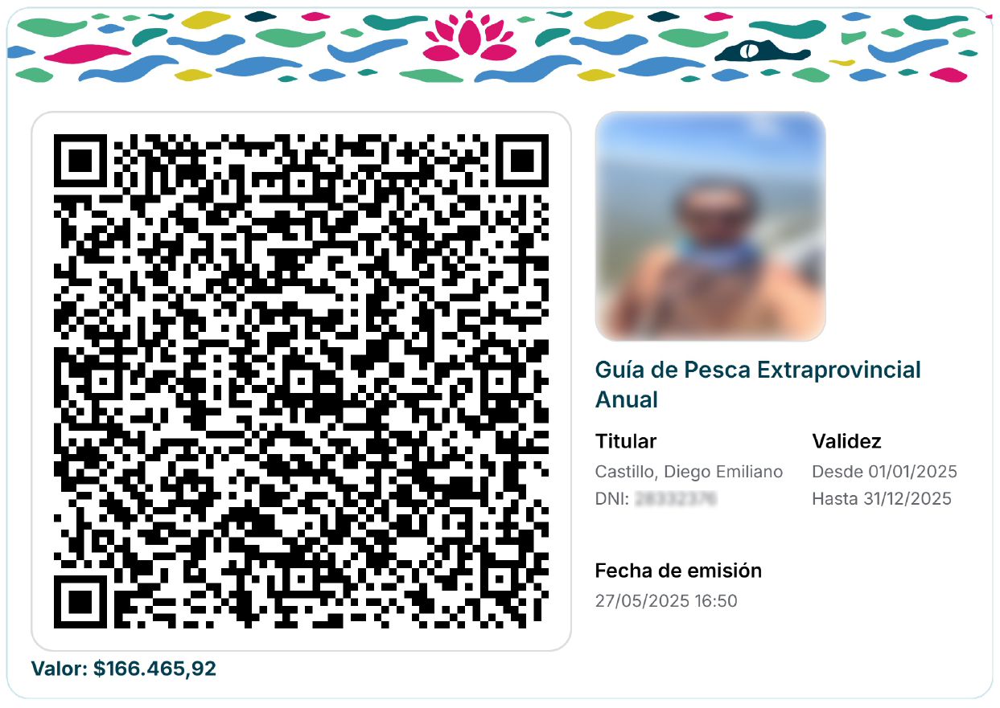
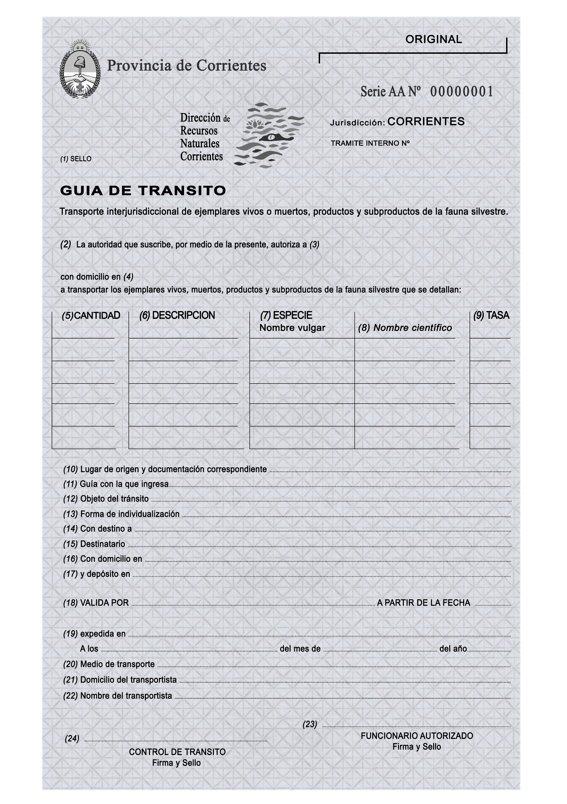
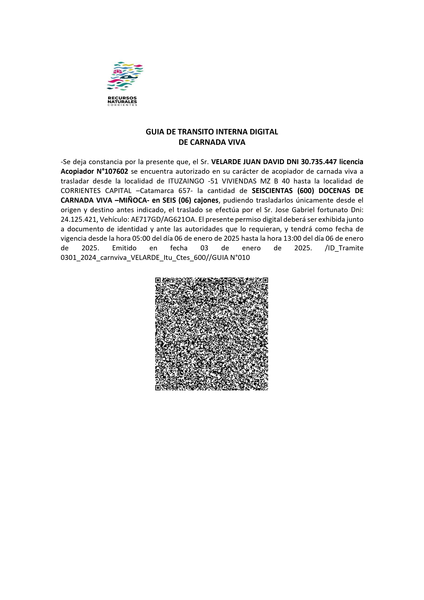
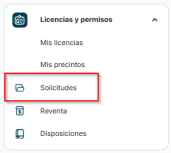
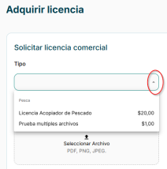
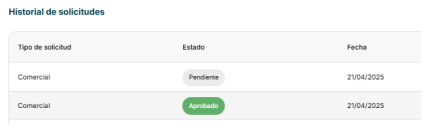

CUALQUIER CONTACTO CON LOS RECURSOS NATURALES EN LA PROVINCIA DE CORRIENTES DEBE CONTAR CON AUTORIZACIÓN DE LA DIRECCIÓN DE RECURSOS NATURALES
Indice de contenido

Modelo de licencia expedida a través del portal institucional
A través del sitio web oficial www.recnaturalesctes.gob.ar, los usuarios podrán gestionar la obtención de licencias de pesca, tanto deportivas como comerciales, así como establecer contacto con el personal administrativo ante cualquier consulta o requerimiento.
recnaturalesctes.gob.arModelo de Guía de Tránsito Federal
Podrá solicitar la Guía de Tránsito Federal Interjurisdiccional para el traslado de ejemplares, siempre que haya cumplimentado la totalidad de la documentación requerida conforme a la normativa vigente.

Modelo guía de transito interna para el traslado de ejemplares dentro de la provincia

- Licencia
- Precintos
- Especies
- Cantidad
- Permiso dueño del campo
Ley de caza de la provincia LEY Nº 1.863/54
decreto reglamentario ley caza DECRETO Nº 2.249/55
disposición vigente de caza 248/25
| Nombre |
|---|
| Antilope Negro (Antilope Cervicapra)* |
| Chancho Salvaje (Sus Scrofa)** |
| Ciervo Axis (Axis Axis)** |
Pesca deportiva DECRETO Nº 1.304/78- disposición 853/22
| Especies | Tallas Minimas | Cupos |
|---|---|---|
| ARMADO | 45cm | CINCO (5) |
| BOGA | 45cm | DOS (2) |
| BAGRE AMARILLO | 25cm | CINCO (5) |
| CORVINA | 25cm | CINCO (5) |
| DORADO | ----- | Solo pesca y devolución |
| SURUBI (manchado y atigrado) | ----- | Solo pesca y devolución |
| MANDURE | 40cm | CINCO (5) |
| MONCHOLO | 30cm | CINCO (5) |
| PACU | 45cm | UNO (1) |
| PATI | 70cm | DOS (2) |
| PALOMETA | 20cm | DIEZ (10) |
| RAYA | 80cm diametro | UNO (1) |
| SABALO | 40cm | TRES (3) |
| SALMON | 45cm | DOS (2) |
| TARARIRA | 30cm | CINCO (5) |
| VIRREYNA | 30cm | CINCO (5) |
Pasos para adquirir licencias comerciales
Las siguientes licencias comerciales pueden gestionarse en línea:
- Licencia de Pesca con Mallón independiente
- Licencia de Pesca con Espinel independiente
- Licencia de Acopiador de pescado
- Licencia de Acopiador de carnadas vivas
- Licencia de Acopiador de cueros
- Licencia de Acopiador de astas
- Licencia de Extractor de carnadas vivas independiente
- Licencia de Extractor de peces ornamentales
- Licencia de Guía de caza
- Licencia de Coto de caza
- Licencia de Guía de pesca
- Licencia de Guía de pesca extraprovincial
- Licencia de Cazador
- Licencia de Taxidermista y/o artesano
- Licencia de Acuarista
Para iniciar el trámite, seguí estos pasos:
- Registrate en el sitio web oficial: https://www.recnaturalesctes.gob.ar
- Activá tu cuenta mediante el enlace de validación que recibirás por correo electrónico.
- Ingresá a la sección Solicitudes.
 - Elegí la licencia que querés solicitar.
 - Si corresponde, descargá el convenio asociado a la licencia, completalo y adjuntalo junto con la documentación requerida.
- La Dirección de Recursos Naturales evaluará tu solicitud.
-
Una vez aprobada, recibirás una notificación por correo electrónico,
también verás tu solicitud Aprobada en el sitio y podrás proceder a
adquirir la licencia.
 - Para cualquier consulta debe comunicarse por WhatsApp al 3794-909039